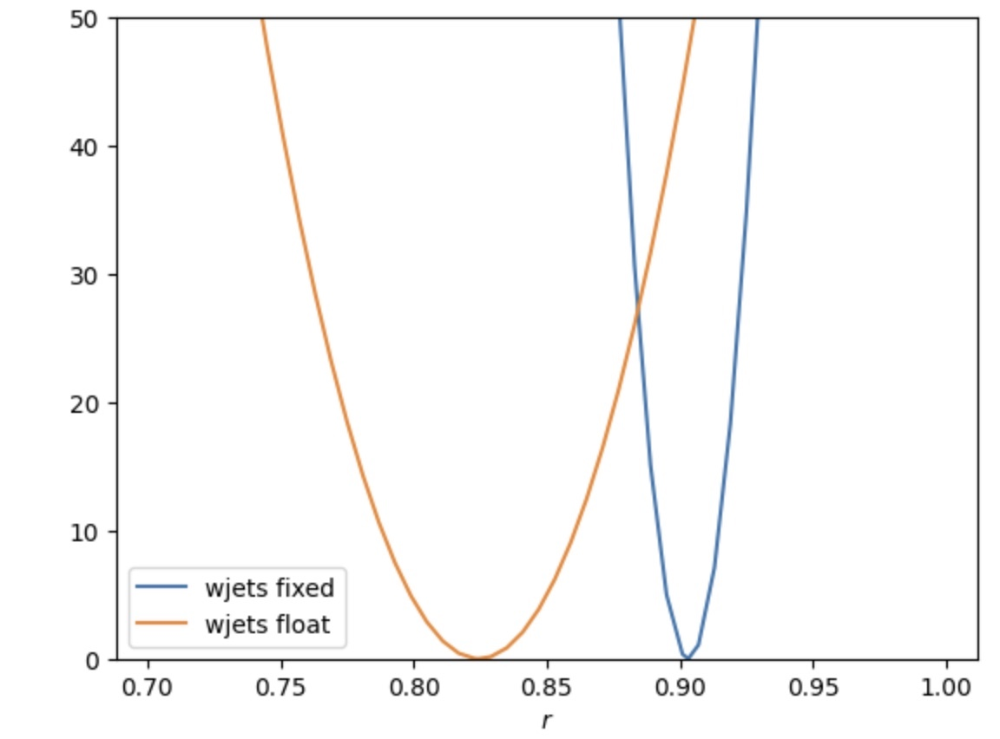

Exercise 2 - Maximum Likelihood Fits
From yesterday's exercise, we now have a set of histograms, from data and simulation, in our .csv file. Don't worry if you didn't manage to run over all of the samples from yesterday, you can use the pre-prepared file ttbarAnalysis/exercise1solutions/signalregion_mbjj.csv.
In today's exercises, we're going to use the CMS statistics software tool combine to extract statistical results from the data (and simulation) that we processed yesterday. combine is a software package that is designed with a command line interface that uses simple .txt files as inputs. You can find out lots more about the tool at the online documentation pages here.
We'll begin by starting the container that has combine compiled for us. If you didn't download the container already, go back to the Getting started pages before continuing.
To do this, type the following into a terminal on your laptop (or by clicking the play button next to the cms_combine container in the Docker desktop application and using the terminal there).
We'll also need to checkout the GitHub area since this is the first time we're using this container.
git clone https://github.com/nucleosynthesis/LHCDataStatisticsICISE2024.git
cd LHCDataStatisticsICISE2024/ttbarAnalysis
Now that we're inside the container, start jupyter lab and enter the URL that gets printed to the screen in your preferred browser.
Datacards
Create a new Text file and give it a name (I called mine signalregion_mbjj.txt). This text file will be the input to our combine commands - we call it a Datacard. Copy the text below into your text file.
imax 1
jmax 4
kmax 0
# -----------------------------------------------------------------------------------------
shapes data_obs signalregion signalregion_mbjj.csv signalregion:data:nominal,sum_w:sum_ww
shapes * signalregion signalregion_mbjj.csv signalregion:$PROCESS:nominal,sum_w:sum_ww
# -----------------------------------------------------------------------------------------
bin signalregion
observation -1
# -----------------------------------------------------------------------------------------
bin signalregion signalregion signalregion signalregion signalregion
process ttbar single_atop_t_chan single_top_t_chan single_top_tW wjets
process 0 1 2 3 4
rate -1 -1 -1 -1 -1
# -----------------------------------------------------------------------------------------
Let's go through these lines and see what they are doing.
The first lines, specifying imax, jmax and kmax indicate the number of channels, backgrounds and systematic uncertainties, respectively. In our case, we only have one channel (the signal region), and we have four background processes. Right now, we don't have any systematic uncertainties included but later on, we'll add some - for now, we keep this as 0.
The next lines (starting with shapes) say where combine will find the distributions (histograms) for the data and the different processes. The first line,
signalregion_mbjj.csv file in the rows where process==data and systematic==nomial. The final parts of the line say that the column sum_w represents the number of events in each bin. For the data sum_ww isn't used but this part of the line is needed for the code to work.
The next line is very similar
This line is tellingcombine where to find the shapes for the signal and background processes. Here the * means that this applies for all of the processes. The keyword $PROCESS is expanded for each process that we define in the datacard. This is useful to avoid having to write the same datacard line over and over.
Next, we have a line that indicates the total numbers of events for the observed data and the different processes in our signal region.
This tellscombine that there is a channel called signalregion. The observation is usually a number but the -1 there tells combine to go and calculate the total number of observed events by summing up the number of events in each bin - this saves us having to write the number each time.
The next lines are similar,
bin signalregion signalregion signalregion signalregion signalregion
process ttbar single_atop_t_chan single_top_t_chan single_top_tW wjets
process 0 1 2 3 4
rate -1 -1 -1 -1 -1
This tells combine which processes are expected to contribution to the signal region. The names given should match the names in our .csv file so that the shapes line above will find the right histograms. Again, we use -1 for the rate so that combine does the calculating for us. Finally, we also give a process ID. Any process with a value \leq will be considered a signal process, while any process with a value >0 will be a background process. This is important later when we perform statistical tests.
Performing a first fit
Now that we have our Datacard written. We can perform some statistical calculations. We can perform a fit to the data, allowing the total rate of the ttbar process to vary. combine will automatically create a signal strength parameter - r which multiplies the rate of any signal process defined in the datacard.
We will use the FitDiagnostics method to extract the best fit value for the parameter r given the data we observed. We do this by typing the following command in a terminal (you can open a terminal in jupyter lab),
You should get something similar to the output below
--- FitDiagnostics ---
Best fit r: 0.903186 -0.00366585/+0.00367476 (68% CL)
Done in 0.01 min (cpu), 0.01 min (real)
PDF didn't factorize! that you can safely ignore for now.
So it looks like the fit would prefer a value of the tt cross-section around 10% smaller than the predicted value that we used when we processed the ttbar sample. You may have a different result if you are using your own .csv file.
Note that you also will now have files called higgsCombineTest.FitDiagnostics.mH120.root and fitDiagnosticsTest.root that got created from the above command. These files save the result in various ROOT object formats. We will use these files later on, but for now you can just ignore this file.
Let's see if our data/simulation agreement has improved after the fit. We can do this by asking combine to create new templates after the fit. We run the command again, but this time, we will add options to save templates with uncertainties to the fitDiagnosticsTest.root file.
If you are unfamiliar with ROOT, I have created a file called root2py.py with some handy functions to read and convert the objects into simple python arrays that can be used for plotting with matplotlib. Below is an example (written in pyROOT or just python) to make a plot of the distributions after the fit. You can copy either of these
from root2py import *
import ROOT
file = ROOT.TFile.Open("fitDiagnosticsTest.root")
folder = file.Get("shapes_fit_s/signalregion")
results = getHistogramCountsAndData(folder)
import matplotlib.pyplot as plt
nsamples = len(results['samples'])
bin_centres = results['data'][0]
bins_list = [results['samples'][i][1][0][0:-1] for i in range(nsamples)]
bin_boundaries = results['samples'][0][1][0]
samples_stack = [results['samples'][i][1][1] for i in range(nsamples)]
labels = [results['samples'][i][0] for i in range(nsamples)]
data_errs = [results['data'][2],results['data'][3]]
plt.hist(bins_list,bins=bin_boundaries,weights=samples_stack,label=labels,stacked=True,density=False)
plt.errorbar(bin_centres,results['data'][1]
,yerr=data_errs
,label='data'
,marker='o'
,markersize=4.0
,color='black'
,linestyle="none")
# calculate min and max from total errors on prediction for filled area
# we need to add left most and right most bin edge for this to work
totalED = results['total'][1]-results['total'][2]
totalEU = results['total'][1]+results['total'][2]
totalED = np.insert(totalED,0,totalED[0])
totalED = np.append(totalED,totalED[-1])
totalEU = np.insert(totalEU,0,totalEU[0])
totalEU = np.append(totalEU,totalEU[-1])
bin_centres_x = np.insert(bin_centres,0,0)
bin_centres_x = np.append(bin_centres_x,len(bin_centres))
plt.fill_between(bin_centres_x,totalED,totalEU,color='gray',alpha=0.25,step='mid')
plt.ylim(0,1.3e4)
plt.legend()
import ROOT
canvas = ROOT.TCanvas()
file = ROOT.TFile.Open("fitDiagnosticsTest.root")
folder = file.Get("shapes_fit_s/signalregion")
data = folder.Get("data")
print(data.GetN())
total = folder.Get("total"); total.SetFillColor(ROOT.kGray)
ttbar = folder.Get("ttbar") ; ttbar.SetFillColor(ROOT.kOrange) ; ttbar.SetFillStyle(1001)
wjets = folder.Get("wjets") ; wjets.SetFillColor(ROOT.kRed+1)
single_top_tW = folder.Get("single_top_tW") ; single_top_tW.SetFillColor(ROOT.kBlue)
single_atop_t_chan = folder.Get("single_atop_t_chan"); single_atop_t_chan.SetFillColor(ROOT.kBlue-3)
single_top_t_chan = folder.Get("single_top_t_chan"); single_top_t_chan.SetFillColor(ROOT.kBlue-9)
# create legend and stack and fill them
legend = ROOT.TLegend(0.6,0.6,0.89,0.89)
legend.AddEntry(data,"data","pe")
stk = ROOT.THStack("stack",";;Events")
stk.Add(single_top_t_chan); legend.AddEntry(single_top_t_chan,"single_top_t_chan","F")
stk.Add(single_atop_t_chan); legend.AddEntry(single_atop_t_chan,"single_atop_t_chan","F")
stk.Add(single_top_tW); legend.AddEntry(single_top_tW,"single_top_tW","F")
stk.Add(wjets); legend.AddEntry(wjets,"wjets","F")
stk.Add(ttbar); legend.AddEntry(ttbar,"ttbar","F")
#data.Draw("ApE")
stk.Draw("hist")
data.Draw("pE")
#ttbar.Draw("histsame")
total.Draw("E2same")
legend.Draw()
canvas.Draw()
Challenge
Add a ratio panel below the main plot that shows data/total expected. This can be a good way to judge more easily by eye how well the data and predictions agree after the fit.
Adding additional rate modifiers
The agreement looks a little better than before but we could still do better. We should also allow our dominant background process (wjets) to float so that the fit can adjust the total rate.
Add the following line to your Datacard,
This line tells combine to add a new parameter to the model that multiplies the rate of the specified process, in the specified channel. The new parameters will be wjets_norm, which multiplies the rate of the wjets process. We've chosen the default value of the parameter to be 1 and allowed its range to vary between 0 and 5.
Question
Run the -M FitDiagnostics method again and plot the new best fit shapes. Does the agreement improve compared to before? What are the values of the fitted rate multipliers (add the option -v 3 to get combine to print this information).
Show answer
By running
we now find in the output Now we see that the fit would prefer to scale up thewjets process by a factor of ~2.45 compared to our original prediction. The best-fit value for the signal strength has also changed from what we saw before.
If we look at a plot of the fit results we can see things are a little improved. The plot below is made using the pyROOT version of our plotting code.
Remember, your results might be different if you're using your own solution from the first exercise.
You may have noticed that in addition to the best fit value, combine reports an uncertainty +/-. We will cover what we mean by uncertainty in the lectures, but this uncertainty is estimated by using the inverse of the Hessian matrix from the fit result. From this alone, we can see that by including an additional parameter, the uncertainty on our best fit for r has increased. Generally, we expect that adding freedom to the fit will increase the uncertainty of our results but improve the overall agreement in our data/simulation plots.
We can estimate this uncertainty more accurately by scanning the profiled log-likelihood and comparing this for the two cases; with and without the wjets_norm parameter.
Likelihood scans
Remember in the lectures, we define a quantity q(r) as the following,
where the \hat{\cdot} notation means the maximum likelihood estimate (or best-fit) and the subscript and where \nu represents our nuisance parameters. In this case, we only have one such nuisance parameter which is wjets_norm. The value \hat{\nu}_{r} is the value of \nu for that maximises the likelihood when r is fixed to a specific value - sometimes we call this the conditional maximum likelihood.
combine can calculate this quantity as a function of our parameter r using the -M MultiDimFit method and the grid algo with the command,
The option --points tells combine how many evenly spaced points at which to evaluate the function q(r) and the last option specifies the range that those points should be in. After running this command, there will be a new ROOT file called higgsCombineTest.MultiDimFit.mH120.root in your file browser.
Warning
If you run the combine command twice, the output file will be overwritten. By adding the option -n name, you can avoid this as the word Test will be modified to name that you specify. Use this to keep track of different results.
This file contains a TTree that stores the values of r and 0.5\times q(r) in its branches. In the python file root2py.py I have included a function to convert these into python arrays for you. You can plot the value of q(r) using one of the blocks of code below, depending on if you prefer pyROOT or straight python.
Question
Make a plot of q(r) for the case where the rate of wjets is allowed to float and where it is fixed to the original value, on the same axis. Which one is wider? What does that tell us?
Show answer
You should find something like the plot below by using the code provided above and modifying to plot two scans on top of one another.

The scan where the rate of wjets is allowed to float is much wider than the original scan.
Challenge
To estimate the uncertainty, we can define confidence intervals, according to Wilks' theorem, as the region for which q(r)< x_{\alpha} where \alpha is our test size. For 1-\alpha=0.683, i.e a 68.3% confidence interval, x_{\alpha}=1. Find the 68.3% intervals for each of the scans using this method.
Goodness-of-fit
Instead of comparing our data/simulation plots by eye, we can use a measure of the Goodness-of-fit. In lectures we learned about hypothesis testing. combine has several routines for calculating a goodness-of-fit, but we will just use the so called saturated test for an idea of the fit quality.
The test-statistic for a template model is,
$$ t = -2\ln\frac{L(\hat{r},\hat{\theta})}{L_{s}} $$ where L_{s} is the saturated likelihood. It is defined as the likelihood valye where the expected value in each bin is exactly the same as the observed value - i.e the very largest possible likelihood value given the data observed.
We can calculate this value with combine using the following,
A result in the literature (Wilks' theorem) tells us that for large statistics samples (in the asymptotic limit), this test statistic will be distributed according to a \chi^{2} distribution with n degrees of freedom where n is the number of bins in the distribution minus the number of parameters in the fit - in our case this is n=20-2=18. This means, we can convert the number calculated by combine to a p-value using,
or in code form using the function below
Question
Calculate the p-value for both cases (with and without the wjets_norm parameter). Which one is better?
Show answer
You should find a very very small value in both cases so both fits are pretty awful.
Challenge
In the combine online documentation, on Goodness of fit tests, you can find instructions for calculating p-values using toys rather than relying on asymptotic methods. Calculate the p-values for the two cases using the saturated algorithm.
Control regions
In the previous examples we saw that we can trade between sensitivity in our measurement (the uncertainty in r) and quality of the fit result. In an ideal world, we would have a good overall quality of the fit and a reasonably small uncertainty in our results.
We saw that the fit improved when allowing the rate of wjets to float in the fit, but at the cost of increased uncertainty in r. We can improve this by constraining the parameter wjets_norm using a control region.
A control region is another region in the data that is dominated by a particular background process. By including this region in the fit, we will be able to use that additional data to constrain the wjets_norm parameter.
Let's go back to the cms_python container and modify our analysis notebook to create a control region that will be dominated by the wjets process. If you didn't manage to get a working analysis yesterday, you can use the notebook provided ttbarAnalysis/exercise1solutions/FullAnalysis.ipynb.
We need to change how we are filtering our events, we want to modify the selection so that we choose events with no b-tagged jets but everything else is the same, i.e change,
toOur observable will be different now since we no longer want to pick the trijet with a b-quark. Instead we just use the trijet with the largest p_{T}, i.e we change the observable calcualtion to
trijet = ak.combinations(selected_events_CR, 3, fields=["j1", "j2", "j3"])
j1,j2,j3 = ak.unzip(trijet)
trijet["p4"] = trijet.j1 + trijet.j2 + trijet.j3
trijet_mass = trijet["p4"][ak.argmax(trijet.p4.pt, axis=1, keepdims=True)].mass
observable = ak.flatten(trijet_mass).to_numpy()
Question
Write a new notebook to process the events but this time applying the control region selection.
If you prefer, you can instead modify your original notebook so that it can process the events for the signal region and control region at the same time! Remember,
- Also modify the name of the output file to something like controlregion_mbjj.csv so as not to overwrite our signal region.
- You should name the channel for the control region something like "controlregion" as we'll use this name for our datacards later - remember this when using the histogramToDataframe function.
- We also want to include the histograms for the jes up and down variations just like we did in the control region.
Show answer
I have uploaded a Jupyter notebook that will perform the analysis on the samples and produce both the signal region and control region in a single output .csv called allregions.csv. The notebook os called FullAnalysisWithControlRegion.ipynbin the ttbarAnalysis folder. If you really get stuck, have a look at this notebook to see how to run our object and event selection, calculate the observable and save the histograms for all of the samples this time with the control region.
The distributions in the control region should look something like the plot below